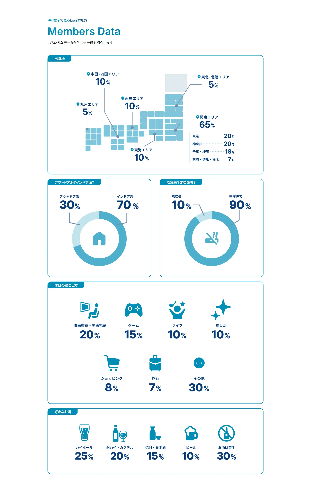
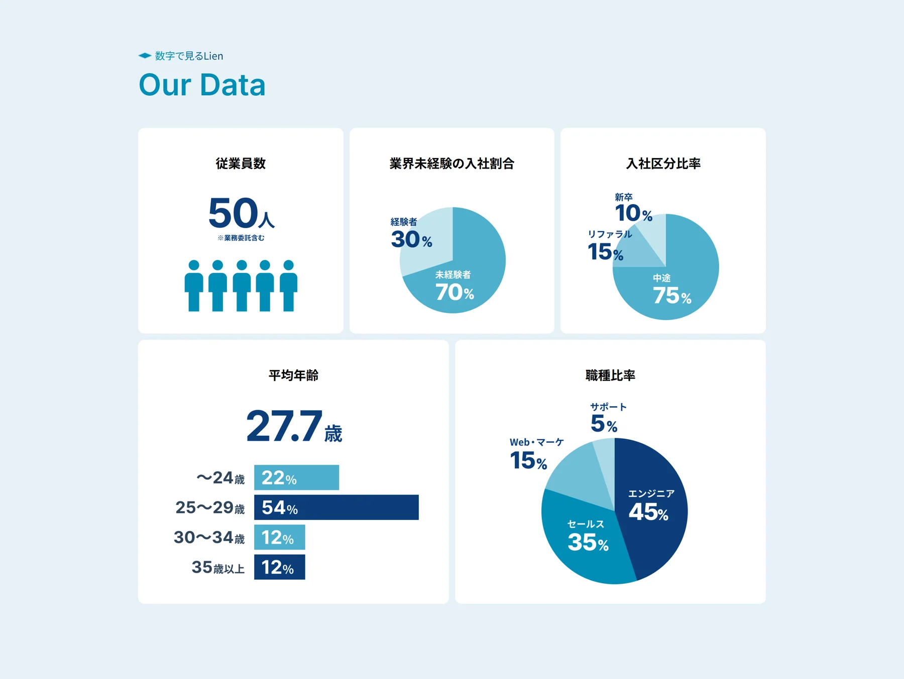
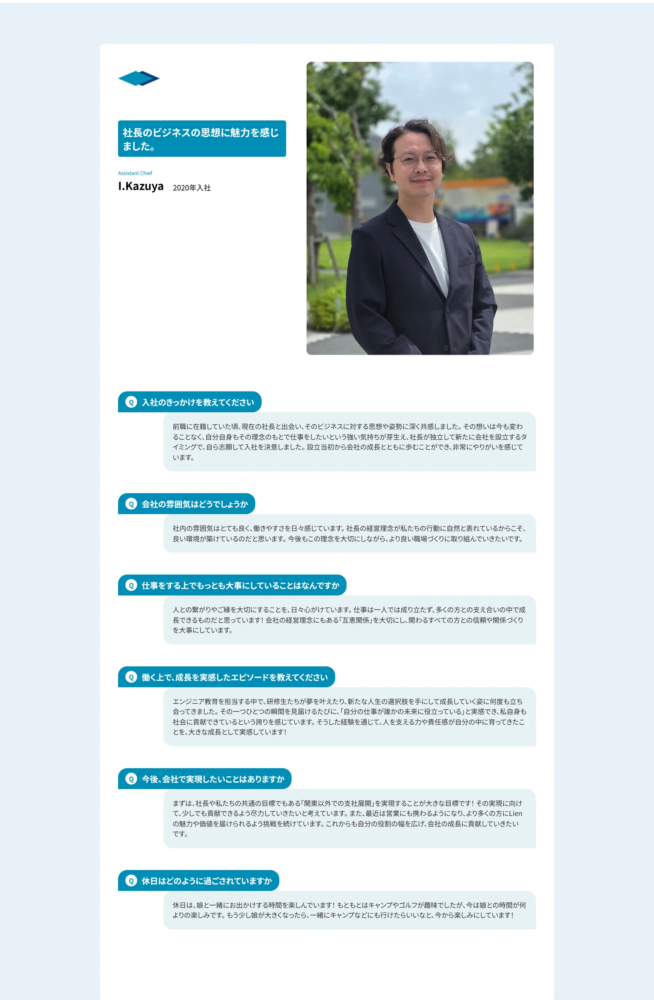
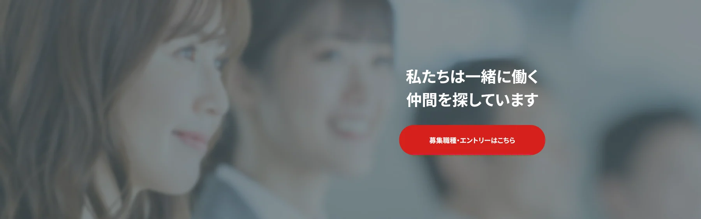
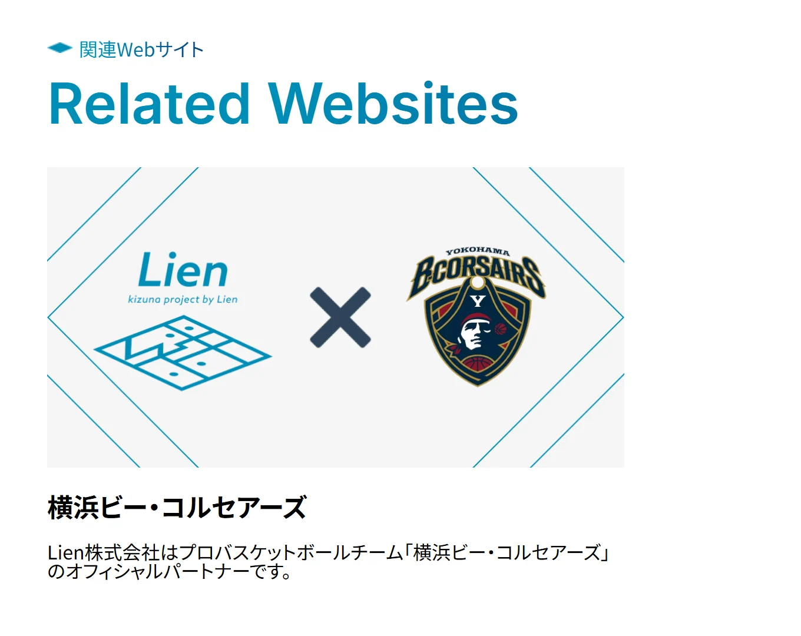
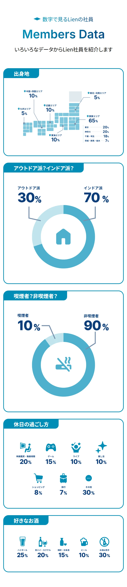

01
社員データの可視化
社員構成や働き方に関する数値を、円グラフ・棒グラフ・アイコンなどを使って整理しました。細かな説明を読まなくても、会社の特徴を視覚的に把握できる構成を目指しています。

採用強化に向けたコーポレートサイト改修で、既存サイトのデザインルールを引き継ぎながら、社員データ・インタビュー・採用バナーなどの追加デザインを担当しました。

クライアント
Lien株式会社
制作時期
2025年6月
制作目的
採用強化を目的としたコーポレートサイトのリニューアル。求職者に会社の特徴や社員の雰囲気を分かりやすく伝えるコンテンツを追加。
制作体制
ディレクター / デザイナー（本人） / コーダー
担当範囲
既存サイト確認 / 構成整理 / PCデザイン / SPデザイン / バナー制作 / ロゴを使用したビジュアル制作 / 画像加工
使用ツール
Figma / Photoshop
実装
社内コーダーが担当。PC・スマートフォンのデザインカンプを共有して実装を引き継ぎ。
公開
実際のコーポレートサイトへ反映・公開済み。
Lien株式会社の採用強化を目的としたコーポレートサイトリニューアルで、追加コンテンツのWebデザインを担当しました。
既存サイトの構成・配色・余白・パーツ表現を確認したうえで、新たに社員データを伝えるエリア、社員インタビュー、採用導線用バナー、ロゴを使用したビジュアルなどを制作しています。
新しく追加した部分だけが浮いて見えないよう、「もともとこのサイトにあったように見えること」を意識しながら、PC・スマートフォン双方のデザインをFigmaで作成しました。
画像素材についてはPhotoshopで明るさや角度などを調整し、デザイン確定後は社内のコーダーへ実装を引き継いでいます。
社員構成や働き方に関する数値を、円グラフ・棒グラフ・アイコンなどを使って整理しました。細かな説明を読まなくても、会社の特徴を視覚的に把握できる構成を目指しています。

質問と回答が長く続いても読み進めやすいよう、Q&Aを会話形式で整理しました。質問ごとに視覚的な区切りと余白を設け、現在どの話題を読んでいるのか分かりやすくしています。

既存サイトの配色や写真表現を引き継ぎながら、採用コンテンツへの入口として視認できるバナーを制作しました。

提供されたロゴ素材の品質を確認し、より高解像度の素材を使用することで、既存サイト上でも輪郭がきれいに見えるよう調整しました。

追加コンテンツを制作する際は、新しいエリアだけが後付けに見えないよう、既存サイトの配色・余白・角丸・文字サイズ・アイコン表現などを確認しました。
提供された情報をそのまま配置するのではなく、既存ページと並べても違和感がないよう何度も調整し、「もともとこのサイトにあったように見えること」を基準にデザインしています。
社員構成や働き方などのデータは、数字を文章で並べるだけでは内容を比較しづらいため、円グラフ・棒グラフ・アイコンを使って視覚化しました。
特に割合や人数などの主要な数値は文字サイズと色のコントラストで強調し、細かな説明を読まなくても全体の傾向を把握できるよう情報の優先順位を整理しています。
社員インタビューは、質問と回答が長く続くため、単純な文章の羅列にならないようQ&A形式で整理しました。
LINEなどのコミュニケーションツールのように、質問と回答の役割が視覚的に分かれる構成を取り入れています。質問ごとに余白を設け、長いインタビューでも現在どの話題を読んでいるのか分かりやすくしました。
社員写真は撮影条件が統一されておらず、明るさや人物の立ち方にばらつきがありました。
一覧で並べた際に違和感が出ないよう、Photoshopで明るさを調整し、必要に応じて人物の傾きや見え方を整えています。
デザインだけでなく、異なる条件で用意された素材を同じページの中で自然に見せることも意識しました。
社員データエリアのPC・スマートフォン双方のデザインカンプを作成し、社内コーダーへ共有しました。以下は公開中の表示です。

ディレクターを窓口としてクライアントの要望を確認し、私はデザインを担当しました。デザイン確定後は社内のコーダーへPC・スマートフォンのデザインカンプを共有し、実装を引き継いでいます。
完成後に社員写真を一覧で見直した際、明るさや傾きだけでなく、人物の頭の位置やトリミング範囲までより細かく統一できたと感じました。
身長や体格による自然な差は残しつつ、複数の人物写真を並べる場合は、個別の写真だけでなく一覧で見たときの基準線まで確認することが重要だと学びました。